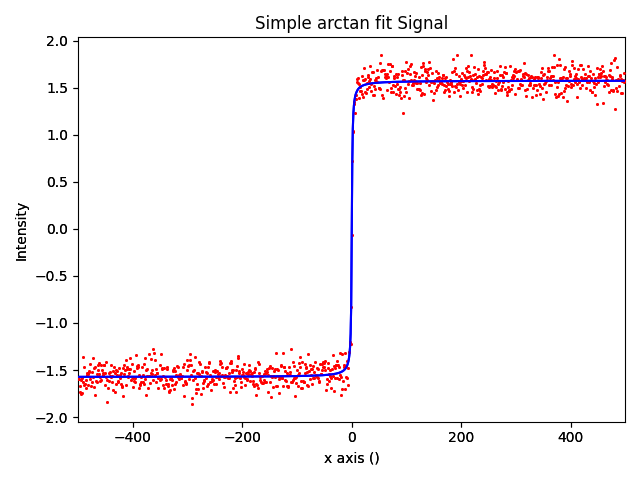

Note
Go to the end to download the full example code.
Simple arctan fit#
Fit an arctan function.
Model1D: Simple arctan fit
CurrentComponentValues: Arctan
Active: True
Parameter Name | Free | Value | Std | Min | Max | Linear
============== | ======= | ========== | ========== | ========== | ========== | ======
A | True | 1.00058965 | 0.00212365 | None | None | True
k | True | 0.99489052 | 0.08365994 | None | None | False
x0 | True | 0.02282552 | 0.07915167 | None | None | False
import numpy as np
import hyperspy.api as hs
# Generate the data and make the spectrum
data = np.arctan(np.arange(-500, 500))
s = hs.signals.Signal1D(data)
s.axes_manager[0].offset = -500
s.axes_manager[0].units = ""
s.axes_manager[0].name = "x"
s.metadata.General.title = "Simple arctan fit"
s.set_signal_origin("simulation")
s.add_gaussian_noise(0.1)
# Make the arctan component for use in the model
arctan_component = hs.model.components1D.Arctan()
# Create the model and add the arctan component
m = s.create_model()
m.append(arctan_component)
# Fit the arctan component to the spectrum
m.fit()
# Print the result of the fit
m.print_current_values()
# Plot the spectrum and the model fitting
m.plot()
Total running time of the script: (0 minutes 0.341 seconds)